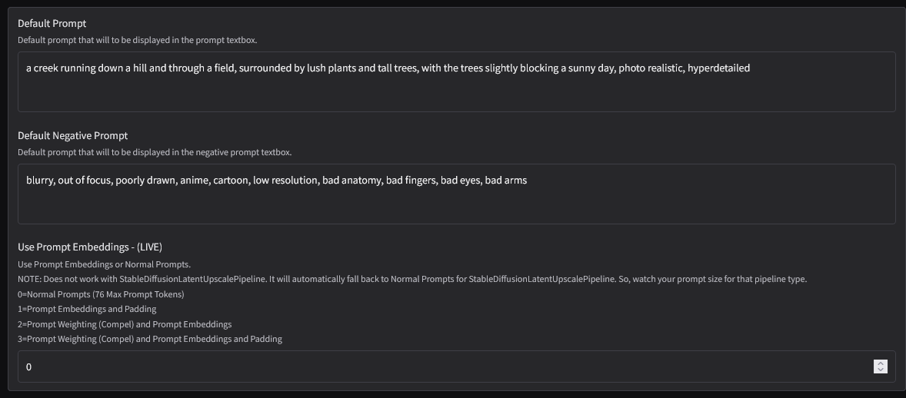
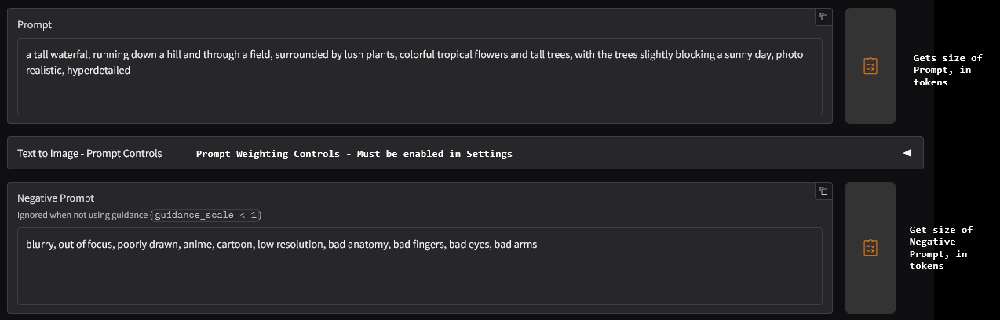
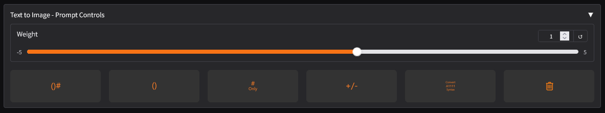
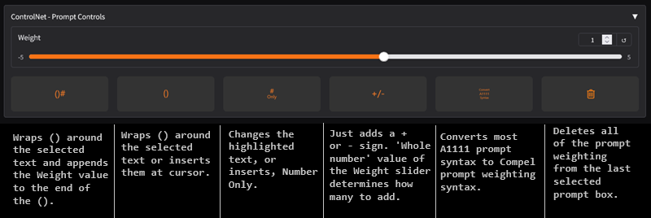

Prompt settings like, 'Prompt Embeddings', can be changed to enhance the input prompts.
Here's a screenshot from the 'Settings' tab.

Input prompts can be weighted using the 'Accordian' between the two prompt boxes.

Which looks like this Once you open it.

Here is what each one does.

Copyright (C) 2025-present Rock Stevens